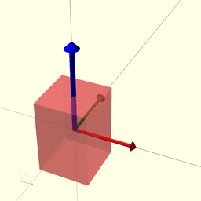
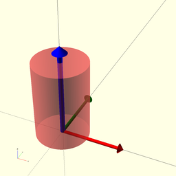
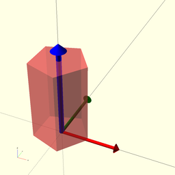
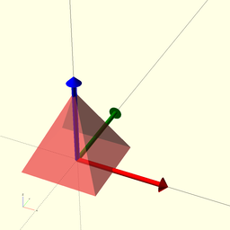
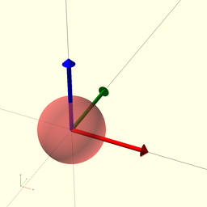

package foundation/3d-engine
Dependencies
graph LR
A1[foundation/3d-engine] --o|include| A2[foundation/2d-engine]
A1 --o|use| A3[dxf]
A1 --o|use| A4[foundation/traits-engine]
A1 --o|use| A5[foundation/type-engine]3d primitives
Copyright © 2021, Giampiero Gabbiani (giampiero@gabbiani.org)
SPDX-License-Identifier: GPL-3.0-or-later
Functions
function fl_3d_AxisList
Syntax:
Build a floating semi-axis list from literal semi-axis list.
example:
list = fl_3d_AxisList(axes=["-x","±Z"]);
is equivalent to:
list =
[
[-1, 0, 0], // -X semi-axis
[ 0, 0, -1], // -Z semi-axis
[ 0, 0, +1], // +Z semi-axis
];
:memo: NOTE: the negative ('-') or positive ('+') sign must always be set.
Parameters:
axes
semi-axis literals list (es.["-x","±Z"])
function fl_3d_AxisVList
Syntax:
Constructor for a full semi-axis value list. The returned value can be built from a list of pairs ("string", value) or from a list of semi-axes name strings
| parameter | result |
|---|---|
| kvs | full semi-axis value list initialized from the passed axis/value pair list |
| values | full boolean semi-axis value list from semi-axis literal |
See also function fl_tt_isAxisVList()
example 1:
thick = fl_3d_AxisVList(kvs=[["-x",3],["±Z",4]]);
is equivalent to:
thick =
[
[3,0], // -x and +x value pair
[0,0], // -y and +y value pair
[4,4] // -z and +z value pair
];
example 2:
values = fl_3d_AxisVList(axes=["-x","±Z"]);
is equivalent to:
values =
[
[true, false], // -x and +x boolean
[false, false], // -y and +y boolean
[true, true] // -z and +z boolean
];
Parameters:
kvs
semi-axis key/value list (es. [["-x",3],["±Z",4]])
axes
semi-axis list (es.["-x","±Z"])
function fl_3d_abs
Syntax:
Transforms a vector inside the +X+Y+Z octant
function fl_3d_axisIsSet
Syntax:
Wether «axis» is present in floating semi-axis «list».
TODO: this is a recursive solution that could be more quickly solved by a mere call to the OpenSCAD builtin search() function like in the example below:
function fl_3d_axisIsSet(axis,list) = search([axis],list)!=[[]]
TODO: eventually replace it with fl_isInAxisList()
function fl_3d_axisValue
Syntax:
returns the «axis» value from a full semi-axis value list
Parameters:
axis
axis to retrieve corresponding value
values
full semi-axis value list (see also function fl_tt_isAxisVList())
function fl_3d_max
Syntax:
Builds a max vector
function fl_3d_medianValue
Syntax:
calculates the median VALUE of a 2d/3d point list
function fl_3d_min
Syntax:
Builds a minor vector
function fl_3d_orthoPlane
Syntax:
Cartesian plane from axis
function fl_3d_planarProjection
Syntax:
Projection of «vector» onto a cartesian «plane»
Parameters:
vector
3D vector
plane
cartesian plane by vector with ([-1,+1,0]==[1,1,0]==XY)
function fl_3d_sign
Syntax:
returns the sign of a semi-axis (-1,+1)
function fl_3d_vectorialProjection
Syntax:
Projection of «vector» onto a cartesian «axis»
Parameters:
vector
3D vector
axis
cartesian axis ([-1,0,0]==[1,0,0]==X)
function fl_Cube
Syntax:
function fl_Cylinder
Syntax:
Parameters:
h
height of the cylinder or cone
r
radius of cylinder. r1 = r2 = r.
r1
radius, bottom of cone.
r2
radius, top of cone.
d
diameter of cylinder. r1 = r2 = d / 2.
d1
diameter, bottom of cone. r1 = d1 / 2.
d2
diameter, top of cone. r2 = d2 / 2.
function fl_Prism
Syntax:
Parameters:
n
edge number
l
edge length
l1
edge length, bottom
l2
edge length, top
h
height of the prism
function fl_Pyramid
Syntax:
Parameters:
base
2d point list defining the polygonal base on plane XY
apex
3d point defining the apex
function fl_Sphere
Syntax:
function fl_bb_accum
Syntax:
Accumulates a list of bounding boxes along a direction.
Recursive algorithm, at each call a bounding box is extracted from «bbcs» and decomposed into axial and planar components. The last bounding box in the list ended up the recursion and is returned as result. If there are still bounding boxes left, a new call is made and its result, decomposed into the axial and planar components, used to produce a new bounding box as follows:
- for planar component, the new negative and positive corners are calculated with the minimum dimensions between the current one and the result of the recursive call;
- for the axial component when «axis» is positive:
- negative corner is equal to the current corner;
- positive corner is equal to the current positive corner PLUS the gap and the axial dimension of the result;
- when «axis» is negative:
- negative corner is equal to the current one MINUS the gap and the axial dimension of the result
- the positive corner is equal to the current corner.
Parameters:
axis
layout direction
gap
gap to be inserted between bounding boxes along axis
bbcs
bounding box corners
function fl_bb_cube
Syntax:
function fl_bb_cylinder
Syntax:
Parameters:
h
height of the cylinder or cone
r
radius of cylinder. r1 = r2 = r.
r1
radius, bottom of cone.
r2
radius, top of cone.
d
diameter of cylinder. r1 = r2 = d / 2.
d1
diameter, bottom of cone. r1 = d1 / 2.
d2
diameter, top of cone. r2 = d2 / 2.
function fl_bb_prism
Syntax:
Parameters:
n
edge number
l
edge length
l1
edge length, bottom
l2
edge length, top
h
height of the prism
function fl_bb_pyramid
Syntax:
function fl_bb_sphere
Syntax:
function fl_bb_torus
Syntax:
Parameters:
r
radius of the circular tube.
d
diameter of the circular tube.
e
elliptic tube [a,b] form
R
distance from the center of the tube to the center of the torus
function fl_centroid
Syntax:
Calculates the geometric center of the passed points.
Parameters:
pts
Point list defining a polygon/polyhedron with each element p | p∈ℝ^n^
function fl_cube_size
Syntax:
function fl_cyl_botRadius
Syntax:
function fl_cyl_h
Syntax:
function fl_cyl_topRadius
Syntax:
function fl_cylinder_defaults
Syntax:
cylinder defaults for positioning (fl_bb_cornersKV).
Parameters:
h
height of the cylinder or cone
r
radius of cylinder. r1 = r2 = r.
r1
radius, bottom of cone.
r2
radius, top of cone.
d
diameter of cylinder. r1 = r2 = d / 2.
d1
diameter, bottom of cone. r1 = d1 / 2.
d2
diameter, top of cone. r2 = d2 / 2.
function fl_direction
Syntax:
Return the direction matrix transforming native coordinates along new direction.
Native coordinate system is represented by two vectors: +Z and +X. +Y axis is the cross product between +Z and +X. So with two vector (+Z,+X) we can represent the native coordinate system +X,+Y,+Z.
New direction is expected in Axis–angle representation in the format
[axis,rotation angle]
Parameters:
direction
desired direction in axis-angle representation [axis,rotation]
default
returned matrix when «direction» is undef
function fl_isInAxisList
Syntax:
True when «axis» is contained in the floating semi-axis «list», false otherwise.
TODO: let the function name follow the order of parameters (i.e. rename as fl_isAxisInList(axis,list))
function fl_octant
Syntax:
Calculates the translation matrix needed for moving a shape in the provided 3d octant.
Parameters:
octant
3d octant vector, each component can assume one out of four values
modifying the corresponding x,y or z position in the following manner:
- undef: translation invariant (no translation)
- -1: object on negative semi-axis
- 0: object midpoint on origin
- +1: object on positive semi-axis
Example 1:
octant=[undef,undef,undef]
no translation in any dimension
Example 2:
octant=[0,0,0]
object center [midpoint x, midpoint y, midpoint z] on origin
Example 3:
octant=[+1,undef,-1]
object on X positive semi-space, no Y translated, on negative Z semi-space
type
type with embedded "bounding corners" property (see fl_bb_corners())
bbox
explicit bounding box corners: overrides «type» settings
default
returned matrix when «octant» is undef
function fl_planeAlign
Syntax:
From Rotation matrix from plane A to B
Returns the rotation matrix R aligning the plane A(ax,ay),to plane B(bx,by) When ax and bx are orthogonal to ay and by respectively calculation are simplified.
function fl_prism_defaults
Syntax:
prism defaults for positioning (fl_bb_cornersKV).
Parameters:
n
edge number
l
edge length
l1
edge length, bottom
l2
edge length, top
h
height of the prism
function fl_prsm_botEdgeL
Syntax:
function fl_prsm_h
Syntax:
function fl_prsm_n
Syntax:
function fl_prsm_topEdgeL
Syntax:
function fl_pyr_apex
Syntax:
function fl_pyr_base
Syntax:
function fl_sphere_defaults
Syntax:
sphere defaults for positioning (fl_bb_cornersKV).
function lay_bb_corners
Syntax:
returns the bounding box corners of a layout.
See also fl_bb_accum().
Parameters:
axis
layout direction
gap
gap to be inserted between bounding boxes along axis
types
list of types
function lay_bb_size
Syntax:
calculates the overall bounding box size of a layout
function lay_group
Syntax:
creates a group with the resulting bounding box corners of a layout
Modules
module fl_3d_polyhedronLabels
Syntax:
fl_3d_polyhedronLabels(poly,size,label="P")
module fl_3d_polyhedronSymbols
Syntax:
fl_3d_polyhedronSymbols(poly,size,color="black")
module fl_bb_add
Syntax:
fl_bb_add(corners,mode="3d",auto=true)
add a bounding box shape to the scene
Parameters:
corners
Bounding box corners in [Low,High] format.
see also fl_tt_isBoundingBox()
mode
2d switch, can be either "2d" or "3d"
auto
when true, z-fight correction is applied
module fl_cube
Syntax:
fl_cube(verbs=FL_ADD,type,size,octant,direction)
Cube replacement: if not specified otherwise, the cube has its midpoint centered at origin O

Parameters:
verbs
FL_ADD,FL_AXES,FL_BBOX
octant
when undef, native positioning is used with cube midpoint centered at origin O
direction
desired direction [director,rotation] or native direction if undef
module fl_cutoutLoop
Syntax:
fl_cutoutLoop(list,preferred)
Cutout helper: loops over passed axes initializing a children context as follow:
| Name | Context | Description |
|---|---|---|
| $co_current | Children | Current axis |
| $co_preferred | Children | true if $co_current axis is a preferred one |
This facility is meant to be used with fl_new_cutout() like in the following example:
fl_cutoutLoop(cut_dirs, fl_cutout($this))
if ($co_preferred) {
fl_new_cutout($this_bbox,$co_current,drift=cut_drift,$fl_thickness=...,$fl_tolerance=..)
do_footprint();
}
module fl_cylinder
Syntax:
fl_cylinder(verbs=FL_ADD,type,h,r,r1,r2,d,d1,d2,octant,direction)
Cylinder replacement.

Parameters:
verbs
FL_ADD,FL_AXES,FL_BBOX
type
optional type as returned by fl_Cylinder().
:memo: NOTE: «type» attributes are always overridden by the following parameters (if any).
h
height of the cylinder or cone
r
radius of cylinder. r1 = r2 = r.
r1
radius, bottom of cone.
r2
radius, top of cone.
d
diameter of cylinder. r1 = r2 = d / 2.
d1
diameter, bottom of cone. r1 = d1 / 2.
d2
diameter, top of cone. r2 = d2 / 2.
octant
when undef native positioning is used
direction
desired direction [director,rotation], native direction when undef ([+X+Y+Z])
module fl_direct
Syntax:
fl_direct(direction)
Applies a direction matrix to its children. See also fl_direction() function comments.
Parameters:
direction
desired direction in axis-angle representation [axis,rotation]
module fl_direction_extrude
Syntax:
fl_direction_extrude(direction,length,convexity=10,r,delta,chamfer,trim)
Extrusion along arbitrary direction.
Children are projected on the plane orthogonal to «direction» then extruded by «length» along «direction».
See also the corresponding test: tests/foundation/extrusion-test.scad
Parameters:
direction
direction in [axis,angle] representation
r
offset() radius
delta
offset() delta (ignored when r!=0)
chamfer
offset() chamfer (ignored when r!=0)
trim
Translation list applied BEFORE projection().
:memo: NOTE: trimming modify projection() behavior, enabling its «cut» parameter to true.
module fl_doAxes
Syntax:
fl_doAxes(size,direction)
module fl_fillet_extrude
Syntax:
fl_fillet_extrude(height=100,r1=0,r2=0)
linear_extrude{} with optional fillet radius on each end.
Positive radii will expand outward towards their end, negative will shrink inward towards their end
Limitations:
- individual children of fillet_extrude should be convex
- only straight extrudes with no twist or scaling supported
- fillets only for 90 degrees between Z axis and top/bottom surface
Parameters:
height
total extrusion length including radii
r1
bottom radius
r2
top radius
module fl_frame
Syntax:
fl_frame(verbs=FL_ADD,size=[1,1,1],corners=[0,0,0,0],thick,octant,direction)
3d extension of fl_2d_frame{}.
Parameters:
verbs
supported verbs: FL_ADD, FL_AXES, FL_BBOX
size
outer size
corners
List of four radiuses, one for each base quadrant's corners.
Each zero means that the corresponding corner is squared.
Defaults to a 'perfect' rectangle with four squared corners.
One scalar value R means corners=[R,R,R,R]
thick
subtracted to size defines the internal size
octant
when undef, native positioning is used with cube midpoint centered at origin O
direction
desired direction [director,rotation] or native direction if undef
module fl_importDxf
Syntax:
fl_importDxf(file,layer,direction)
DXF files import with direction and rotation. By default DXF files are imported in the XY plane with no rotation. The «direction» parameter specifies a normal to the actual import plane and a rotation about it.
Parameters:
direction
direction in [axis,angle] representation
module fl_layout
Syntax:
fl_layout(verbs=FL_LAYOUT,axis,gap=0,types,align=0,direction,octant)
Layout of types along a direction.
There are basically two methods of invocation call:
- with as many children as the length of types: in this case each children will be called explicitly in turn with children($i)
- with one child only called repetitively through children(0) with $i equal to the current execution number.
Called children can use the following special variables:
$i - current item index
$first - true when $i==0
$last - true when $i==len(types)-1
$item - equal to types[$i]
$len - equal to len(types)
$size - equal to bounding box size of $item
TODO: add namespace to children context variables.
Parameters:
verbs
supported verbs: FL_AXES, FL_BBOX, FL_LAYOUT
axis
layout direction vector
gap
gap inserted along «axis»
types
list of types to be arranged
align
Internal type alignment into the resulting bounding box surfaces.
Is managed through a vector whose x,y,z components can assume -1,0 or +1 values.
[-1,0,+1] means aligned to the -X and +Z surfaces, centered on y axis.
Passing a scalar means [scalar,scalar,scalar]
direction
desired direction in [vector,rotation] form, native direction when undef ([+X+Y+Z])
octant
when undef native positioning is used
module fl_linear_extrude
Syntax:
fl_linear_extrude(direction,length,convexity=10)
Z-Axis extrusion is oriented along arbitrary axis/rotation
Parameters:
direction
direction in [axis,angle] representation
module fl_lookAtMe
Syntax:
fl_lookAtMe()
rotates children to face camera
module fl_new_cutout
Syntax:
fl_new_cutout(bbox,director,drift=0,trim)
Cutout along arbitrary direction of children shapes.
Context variables:
| Name | Context | Description |
|---|---|---|
| $fl_thickness | Parameter | multi-verb parameter (see fl_parm_thickness()) |
| $fl_tolerance | Parameter | multi-verb parameter (see fl_parm_tolerance()) |
Parameters:
bbox
bounding box delimiting children shape(s)
director
direction vector (3d vector format)
drift
Scalar or function literal (with signature drift()) returning a scalar
value, adding space from children boundaries (if negative this value is
actually subtracted).
trim
3d translation or function literal (signature trim()) returning a 3d
translation that is applied BEFORE projection().
:memo: NOTE: trimming modify the OpenSCAD projection module behavior, enabling its «cut» parameter.
module fl_place
Syntax:
fl_place(type,octant,quadrant,bbox)
Parameters:
octant
3d octant
quadrant
2d quadrant
bbox
bounding box corners
module fl_placeIf
Syntax:
fl_placeIf(condition,type,octant,quadrant,bbox)
Parameters:
condition
when true placement is ignored
octant
3d octant
quadrant
2d quadrant
bbox
bounding box corners
module fl_planeAlign
Syntax:
fl_planeAlign(ax,ay,bx,by,ech=false)
module fl_prism
Syntax:
fl_prism(verbs=FL_ADD,type,n,l,l1,l2,h,octant,direction)
Right prism.

Parameters:
verbs
FL_ADD,FL_AXES,FL_BBOX
n
edge number
l
edge length
l1
edge length, bottom
l2
edge length, top
h
height
octant
when undef native positioning is used
direction
desired direction [director,rotation], native direction when undef ([+X+Y+Z])
module fl_pyramid
Syntax:
fl_pyramid(verbs=FL_ADD,type,base,apex,octant,direction)
Right pyramid.

Parameters:
verbs
FL_ADD,FL_AXES,FL_BBOX
octant
when undef native positioning is used
direction
desired direction [director,rotation], native direction when undef ([+X+Y+Z])
module fl_sphere
Syntax:
fl_sphere(verbs=FL_ADD,type,r,d,octant,direction)
Sphere replacement.

Parameters:
verbs
FL_ADD,FL_AXES,FL_BBOX
octant
when undef default positioning is used
direction
desired direction [director,rotation], default direction if undef
module fl_sym_direction
Syntax:
fl_sym_direction(verbs=FL_ADD,direction,size=0.5)
display the direction change from a native coordinate system and a new direction specification in [direction,rotation] format.
:memo: NOTE: the native coordinate system (ncs) is now meant to be the standard +X+Y+Z (with direction set by +Z)
Parameters:
verbs
supported verbs: FL_ADD
direction
direction in Axis–angle representation
in the format
[axis,rotation angle]
size
default size given as a scalar
module fl_sym_hole
Syntax:
fl_sym_hole(verbs=FL_ADD)
this symbol uses as input a complete node context.
The symbol is oriented according to the hole normal.
Parameters:
verbs
supported verbs: FL_ADD
module fl_sym_plug
Syntax:
fl_sym_plug(verbs=[FL_ADD,FL_AXES],type=undef,size=0.5)
module fl_sym_point
Syntax:
fl_sym_point(verbs=FL_ADD,point=FL_O,size,color="black")
Point symbol.
Parameters:
verbs
supported verbs: FL_ADD
size
synonymous of point diameter
module fl_sym_socket
Syntax:
fl_sym_socket(verbs=[FL_ADD,FL_AXES],type=undef,size=0.5)
module fl_symbol
Syntax:
fl_symbol(verbs=FL_ADD,type=undef,size=0.5,symbol)
provides the symbol required in its 'canonical' form: - "plug": 'a piece that fits into a hole in order to close it' Its canonical form implies an orientation of the piece coherent with its insertion movement along +Z axis. - "socket": 'a part of the body into which another part fits' Its canonical form implies an orientation of the piece coherent with its fitting movement along -Z axis.
variable FL_LAYOUT is used for proper label orientation
Children context:
- $sym_ldir: [axis,angle]
- $sym_size: size in 3d format
Parameters:
verbs
supported verbs: FL_ADD, FL_LAYOUT
size
default size given as a scalar
symbol
currently "plug" or "socket"
module fl_torus
Syntax:
fl_torus(verbs=FL_ADD,r,d,e,R,direction,octant)
«e» and «R» are mutually exclusive parameters
Parameters:
verbs
supported verbs: FL_ADD, FL_AXES, FL_BBOX
r
radius of the circular tube.
d
diameter of the circular tube.
e
elliptic tube [a,b] form
R
distance from the center of the tube to the center of the torus
direction
desired direction [director,rotation], native direction when undef ([+X+Y+Z])
octant
when undef native positioning is used
module fl_tube
Syntax:
fl_tube(verbs=FL_ADD,base,r,d,h,thick,direction,octant)
Parameters:
verbs
supported verbs: FL_ADD, FL_ASSEMBLY, FL_BBOX, FL_DRILL, FL_FOOTPRINT, FL_LAYOUT
base
base ellipse in [a,b] form
r
«base» alternative radius for circular tubes
d
«base» alternative diameter for circular tubes
h
pipe height
thick
tube thickness
direction
desired direction [director,rotation], native direction when undef ([+X+Y+Z])
octant
when undef native positioning is used
module fl_vloop
Syntax:
fl_vloop(verbs,bbox,octant,direction)
Low-level verb-driven OFL API management.
Three-dimensional steps:
- verb looping
- octant translation («octant» parameter)
- orientation along a given direction / angle («direction» parameter)
1. Verb looping:
Each passed verb triggers in turn the children modules with an execution context describing:
- the verb actually triggered;
- the OpenSCAD character modifier descriptor (see also OpenSCAD User Manual/Modifier Characters)
Verb list like [FL_ADD, FL_DRILL] will loop children modules two times,
once for the FL_ADD implementation and once for the FL_DRILL.
The only exception to this is the FL_AXES verb, that needs to be executed outside the canonical transformation pipeline (without applying «octant» translations). FL_AXES implementation - when passed in the verb list - is provided automatically by the library.
So a verb list like [FL_ADD, FL_AXES, FL_DRILL] will trigger the children
modules twice: once for FL_ADD and once for FL_DRILL. OFL will trigger an
internal FL_AXES implementation.
2. Octant translation
A coordinate system divides three-dimensional spaces in eight octants.
Using the bounding-box information provided by the «bbox» parameter, we can fit the shapes defined by children modules exactly in one octant.
3. Orientation
OFL can also orient shapes defined by children modules along arbitrary axis and additionally rotate around it.
Context variables:
| Name | Context | Description |
|---|---|---|
| Children | see fl_generic_vloop{} context variables |
Parameters:
verbs
verb list
bbox
mandatory bounding box
octant
when undef native positioning is used
direction
desired direction [director,rotation], native direction when undef
module fl_vmanage
Syntax:
fl_vmanage(verbs,this,octant,direction)
High-level (OFL 'objects' only) verb-driven OFL API management.
It does pretty much the same things like fl_vloop{} but with a different interface and enriching the children context with new context variables.
Usage:
// An OFL object is a list of [key,values] items
object = fl_Object(...);
...
// this engine is called once for every verb passed to module fl_vmanage
module engine() let(
...
) if ($this_verb==FL_ADD)
; // verb implementation code
else if ($this_verb==FL_BBOX)
; // verb implementation code
else if ($this_verb==FL_CUTOUT)
; // verb implementation code
else if ($this_verb==FL_DRILL)
; // verb implementation code
else if ($this_verb==FL_LAYOUT)
; // verb implementation code
else if ($this_verb==FL_MOUNT)
; // verb implementation code
else
fl_error(["unimplemented verb",$this_verb]);
...
fl_vmanage(verbs,object,octant=octant,direction=direction)
engine();
Context variables:
| Name | Context | Description |
|---|---|---|
| Children | see fl_generic_vmanage{} Children context |
Parameters:
octant
when undef native positioning is used
direction
desired direction [director,rotation], native direction when undef